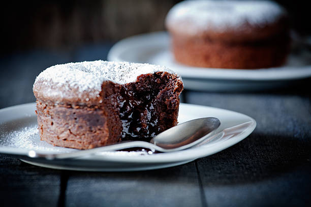

...Sufle Tarifi...
Tarif ; Elif Atalar
Kaç kişilik - 4 kişilik
-
Hazırlık Süresi - 15 dk
-
Pişirme süresi - 10 dk
Malzemeler
- 3 tane yumurta (yumurtalar büyükse 2 tane kullanabilirsiniz)
- 80g bitter çikolata
- Yarım su bardağı un
- 50 g tereyağı
- Yarım su bardağı şeker (biz çok tatlı sevmediğimiz için 3 yemek kaşığı kadar kullandık)
- 1 çimdik tuz

Tarifin Hazırlanışı
- Çikolatalı sufle yapmaya başlamadan önce İlk olarak fırını 220 derecede çalıştırın.
- Tereyağını teflon teflon tavada kısık ateşte erittikten sonra çikolatayı ekleyin ve karıştırarak eritin. Eridikten sonra ocağı kapatarak unu ilave edin ve iyice karıştırın.
- Ayrı bir kapta yumurta ve şekeri karışım beyazlayana kadar çırpın. Şeker tadının ön plana çıkması için tuzu ekleyip çırpın.
- Çikolatalı harcı ilave ederek mikserle tekrar çırpın. Hamurumuz hazır.
- Sufle kaplarınızı ya da ısıya dayanıklı küçük kaplarınız varsa içlerini yağlayarak hamurdan eşit şekilde hepsine paylaştırın. bu ölçülerle ben 3 kap sufle elde ettim ancak sizin kullandığınız kalıpların büyüklüğüne göre bu sayı değişecektir.
- Daha önceden fansız çalıştırdığınız ve ısıttığınız fırında 7-8 dakika da sufleniz hazır. Eğer kalıplarınız büyükse 8 küçükse 7 dakika pişirmenizi tavsiye ederim.
- Fırından aldıktan sonra bir kaç dakika ilk sıcaklığının geçmesini bekleyin sonra ister tabağa çevirip ister kaseden yiyebilirsiniz.
- Kabınızı yağlamışsanız yapışmayacaktır. Folyodan sufle kapları var onları da kullanabilirsiniz, onlarda da suflenin çok rahat çıktığını göreceksiniz.